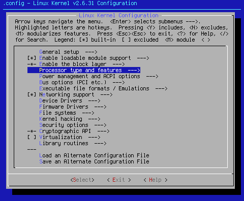
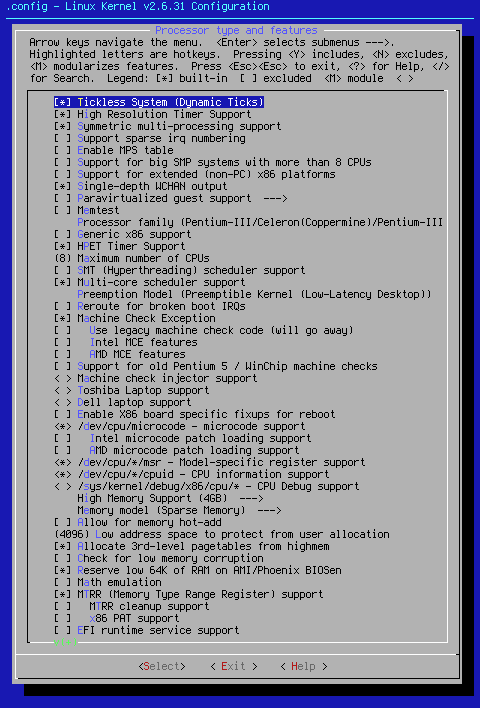
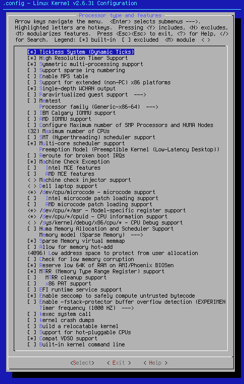

Custom Search
This page is going to specifically cover Processor type and features --->. There are lots of options on this page in both x86 and x86_64. I will cover them all here.

Arrow key down to the area shown. When you hit <Select> at this point, you will bring up one of two pages, depending on whether you're running x86 or x86_64:

x86

x86_64
While there are many options in common between x86 and x86_64, there are others that are architecture specifc. All architecture specifc settings will be indicated by x86 or x86_64 appearing before the option name.
[*] Tickless System (Dynamic Ticks)
Turning on this setting makes it so that timer interrupts will only trigger on an as-needed basis whether the system is busy or idle. This is a good thing for power savings on laptops. For those that demand the lowest latency, you can turn this off. I've not really seen a difference, but because this setting is reputed to speed things up, it might get changed in a future seed iteration. This setting defaults to on.
[*] High Resolution Timer Support
This setting allows high resolution timer to operate. Since I have the hardware, as do most owners of at least Pentium-III machines, this setting defaults to on.
[*] Symmetric multi-processing support
If you have a multi-processor machine or a multi-core processor, this is a must have. According to < Help >, 'People using multiprocessor machines who say Y here should also say Y to "Enhanced Real Time Clock Support", below. The "Advanced Power Management" code will be disabled if you say Y here.' This isn't an issue, since APM is as dead as dual-cable MFM and RLL hard drives. Also note that this setting doesn't bother uniprocessor systems. Even so, it's a good idea to turn it off for uniprocessor systems. This setting defaults to on.
[ ] Support sparse irq numbering
According to < Help >, "This enables support for sparse irqs. This is useful for distro kernels that want to define a high CONFIG_NR_CPUS value but still want to have low kernel memory footprint on smaller machines. ( Sparse IRQs can also be beneficial on NUMA boxes, as they spread out the irq_desc[] array in a more NUMA-friendly way. )" In other words, if you have a NUMA system, it's a good thing. If not, there's no need to turn it on. Since I have run into few NUMA systems, this setting defaults to off.
[ ] Enable MPS table
According to < Help >, "For old smp systems that do not have proper acpi support. Newer systems (esp with 64bit cpus) with acpi support, MADT and DSDT will override it." For this reason, this setting defaults to off.
[ ] Support for big SMP systems with more than 8 CPUs
If you have such a system, turn this on. Since few desktops fall into this category, this setting defaults to off.
[ ] Support for extended (non-PC) x86 platforms
According to < Help >, "If you enable this option then you'll be able to select support for the following (non-PC) 64 bit x86 platforms: ScaleMP vSMP SGI Ultraviolet." Since these are rare case systems, this setting defaults to off.
[*] Single-depth WCHAN output
According to < Help >, "Calculate simpler /proc/ [ ] Paravirtualized guest support ---> If you plan on using virtualized guest support, this setting must be turned on. While it adds no kernel code, it opens other kernel sections for configuration. Since I don't support this option, the setting defaults to off. [ ] Memtest Since every Linux install disk I've seen so far includes a memtest option, I see no need to set this in a working kernel. I can't see where it will hurt if turned on. If you wish to have memtest on the fly, you can turn this on. This setting defaults to off. Processor family There are numerous options under this setting. Use the information from cat /proc/cpuinfo to set this option. If you are unclear exactly which CPU you have, google the family and model numbers. This setting defaults to (X) Pentium-III/Celeron(Coppermine)/Pentium-III Xeon for x86 and (X) Generic-x86-64 for x86_64. Change this setting to your actual processor.
x86 [ ] Generic x86 support Since the idea of the kernel seed first and foremost is about matching your kernel to your machine, use of this setting is really counterproductive. Effectively, it turns off all optimizations for the CPU you have in favor of a more generic (Pentium Pro) set of CPU optimizations. This setting defaults to off. x86 [*] HPET Timer Support One of the numerous uses of this particular setting is in audio work. It's also a good idea if you need to measure high precision events. This setting defaults to on. x86_64 [ ] IBM Calgary IOMMU support If you have a system that supports IOMMU, turn this setting on. Check your system manual to see if IOMMU is supported. This setting defaults to off. x86_64 [ ] Configure Maximum number of SMP Processors and NUMA Nodes If you have a system that supports NUMA (such as a Core i7, or certain AMD chips), turn this setting on. This setting defaults to off. (xx) Maximum number of CPUs This setting was put in the seed for the purposes of seeing who was awake, and who was asleep at the wheel. Since each CPU claimed takes up approximately eight kilobytes in kernel image size, it's wise to change this number to match the true number of processors in your system. The default setting is ridiculous. [ ] SMT (Hyperthreading) scheduler support Only people with Pentium 4 or i7 chips should use this setting. It is not supported by Core2 Duo or any AMD chips. Those who need Hyperthreading support should turn it on. This setting defaults to off. [*] Multi-core scheduler support This setting is currently under test. If turned off, it appears as if one CPU tends to take precedence over the other. It also appears as if this is a good thing speed wise. This setting currently defaults to on. Preemption Model Under this setting are the following options: ( ) No Forced Preemption (Server) This setting determines the preemption level for your kernel. The default setting here was chosen because it allows preemption of all kernel code not currently executing in a critical section. While it does slow throughput slightly, it improves the general feel of the system. This setting defaults to (X) Preemptible Kernel (Low-Latency Desktop) [ ] Reroute for broken boot IRQs According to < Help >, this setting, 'only affects "broken" chipsets. Interrupt sharing may be increased on these systems.' If you think you have a "broken" chipset, turn this setting on. This setting defaults to off.
[*] Machine Check Exception Under this setting are the following options: x86 [ ] Use legacy machine check code (will go away) Machine Check Exception enables the CPU to inform the kernel in the case of an overheat or some other CPU related error. Note that you would also want to emerge -av mcelog to take advantage of the kernel letting you know there is trouble with your CPU. This setting defaults to on. x86 [ ] Support for old Pentium 5 / WinChip machine checks
x86_64 [ ] AMD IOMMU support
( ) Voluntary Kernel Preemption (Desktop)
(X) Preemptible Kernel (Low-Latency Desktop)
[ ] Intel MCE features
[ ] AMD MCE features
If you have one of these chips, turn this setting on. If not, leave as is. This setting defaults to off.
< >Machine check injector support
According to < Help >, "If you don't know what a machine check is and you don't do kernel QA it is safe to say n." Since few users are kernel QA staff members, this setting defaults to off.
x86 < > Toshiba Laptop support
This setting applies only to Toshiba laptops with genuine Toshiba BIOS. It does not apply to Phoenix BIOS machines. If you have one of these machines, turn this setting on. This setting defaults to off.
< > Dell laptop support
This driver has been tested only on the Inspiron 8000. That makes it a one shot deal for those with that model of laptop. For that reason, this setting defaults to off.x86 < >[ ] Enable X86 board specific fixups for reboot
If you have a system that hangs at reboot or shutdown, this is the setting for you. Since most modern systems don't have this issue, this setting defaults to off.
<*> /dev/cpu/microcode - microcode support
[ ] Intel microcode patch loading support
[ ] AMD microcode patch loading support
Enabling this setting will allow you to update the microcode of most Intel and AMD processors. This also requires you to emerge -av microcode-ctl to be effective. Since being up to date is a good idea, this setting defaults to on. If microcode-ctl isn't emerged, this setting does no harm.
<*> /dev/cpu/*/msr - Model-specific register support
According to < Help >, "[t]his device gives privileged processes access to the x86 Model-Specific Registers (MSRs)." That always sounded like a good thing to me. This setting defaults to on.
<*> /dev/cpu/*/cpuid - CPU information support
According to < Help >,"This device gives processes access to the x86 CPUID instruction to be executed on a specific processor." Once again, this has always sounded like a good idea to me. This setting defaults to on.
< > /sys/kernel/debug/x86/cpu/* - CPU Debug support
If you are having CPU based issues, compile it in. If you have mcelog installed, check that first. This setting is turned off by default.
x86 High Memory Support (4GB) --->
This opens up to the following options:( ) off
(X) 4GB
( ) 64GB
According to < Help >,"Select this if you have a 32-bit processor and between 1 and 4 gigabytes of physical RAM." How can you argue with that? This setting defaults to (X) 4GB
x86_64 [ ] Numa Memory Allocation and Scheduler Support
Turn this setting on if your hardware supports it. This setting defaults to off.
Memory model (Sparse Memory) --->
When opened in x86, the following options appear:
( ) Flat Memory
(X) Sparse Memory
There are no options for x86_64 other than (X) Sparse Memory.
x86_64 [*] Sparse Memory virtual memmap
According to < Help >,"[t]his is the most efficient option when sufficient kernel resources are available." In the context of a kernel seed, the word, "efficient", is a good thing. This setting defaults to on.
[ ] Allow for memory hot-add
Somehow, this idea has always given me a shiver. I sure don't want to try to hot plug my memory modules. USB mouse and keyboard, sure, no problem there. A memory module? Not so much. This setting defaults to off.
(4096) Low address space to protect from user allocation
According to < Help >,"[k]eeping a user from writing to low pages can help reduce the impact of kernel NULL pointer bugs." This code was added when a spate of exploits hit the .31 kernel family. To turn this off, change the value to (0). This setting defaults to (4096).
x86 [*] Allocate 3rd-level pagetables from highmem
According to < Help >,"Setting this option will put user-space page table entries in high memory." Sounds good to me. This setting defaults to on.
[ ] Check for low memory corruption
This is intended as a diagnostic tool. The low memory on some systems is vulnerable to corruption due to BIOS issues. If you think you might be having issues of this kind, turn this setting on. This setting defaults to off.
[*] Reserve low 64K of RAM on AMI/Phoenix BIOSen
There is a bug with the listed BIOSes that can cause memory corruption of data stored in this area. According to < Help >,"A numbers of BIOSes are known to utilize this area during suspend/resume, so it must not be used by the kernel." Sounds like a good enough reason to have this setting default to on.
x86 [ ] Math emulation
Use this setting if your processor doesn't have a math coprocessor. Since that's mostly no one today, this setting defaults to off.[*] MTRR (Memory Type Range Register) support
[ ] MTRR cleanup support
[ ] x86 PAT support
According to < Help >,"Saying Y here also fixes a problem with buggy SMP BIOSes which only set the MTRRs for the boot CPU and not for the secondary CPUs. This can lead to all sorts of problems, so it's good to say Y here." This and the fact that it only adds 9kB to the kernel image if not supported is why this setting defaults to on. The fine tuning settings, [ ] MTRR cleanup support, and [ ] x86 PAT support default to off. Adjust if you desire.
[ ] EFI runtime service support
According to < Help >,"This option is only useful on systems that have EFI firmware." If you have this firmware, then turn this setting on, and other EFI related settings as well. This setting defaults to off.
[*] Enable seccomp to safely compute untrusted bytecode
According to < Help >,"[t]his kernel feature is useful for number crunching applications that may need to compute untrusted bytecode during their execution. Since there isn't much specificity about which programs might need this ability, this setting defaults to on. This code is relatively recent, and only works with gcc-4.2 or above. If you have gcc-4.2 or above, you can turn this on if you wish. It helps prevent stack overflows. This setting defaults to off.
Timer frequency (1000 HZ) --->
When you hit <Select>, you will find the following options:
( ) 100 HZ
( ) 250 HZ
( ) 300 HZ
(X) 1000 HZ
This setting controls how many times a second an IRQ request is sent. (X) 1000 HZ has the effect of reducing latency. That has the effect of making the machine feel snappier. Since kernel seeds are made to be fast, and low latency translates to a speed increase, this setting defaults to (X) 1000 HZ. Those who edit video might want to change this to make sure their results are integers. Those who wish to watch DVD's shouldn't have a problem.
[ ] kexec system call
This is highly experimental code, and its use is not recommended. This setting default to off.
[ ] kernel crash dumps
This setting should only be turned on in special circumstances. If you know those circumstances, you can turn this on. This setting defaults to off.
[ ] Build a relocatable kernel
If you're not running a kernel within a kernel, you don't need this setting. If you think you do, turn it on. This setting defaults to off.
x86 (0x1000000) Alignment value to which kernel should be aligned
This code only applies if you've built a relocatable kernel. Since [ ] Build a relocatable kernel is turned off, this setting has no effect.
[ ] Support for hot-pluggable CPUs
Somehow, the idea of hot swapping CPU's gives me the same creepy feeling as hot swapping memory modules, but just a bit more so. If I'm not doing it to my memory, I'm certainly not doing it to my CPU. This setting defaults to off.
[*] Compat VDSO support
This setting is currently under experimentation. It will most likely be updated in the next iteration of the seeds. For now, this setting defaults to on.
[ ] Built-in kernel command line
Since this is special purpose code, it defaults to off.
Cheers,
Pappy